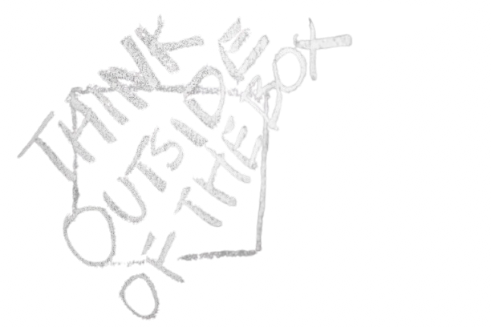

WSD means 'What Should-Do'
끊임없이 행동해야 합니다.
행동의 방향은 다수에게 이로워야하며
먼 미래의 후대가 지금의 이 세대를 보았을 때 영감을 받을 수 있도록
해야하며,
지금 이 순간보다 더 큰 세상을 만드는 기반이 되어야 합니다.
행동을 위해서는 생각이 필요합니다.
개인의 독점적 생각보다 다수의 의견이 통합될 때 올바른 방향으로 설정될
확률이 높다면,
사람이 모인 기업 역시 단순 이익 추구를 넘어 확장된 가치관을
추구해야한다 생각합니다.

Image by Karolina Grabowska